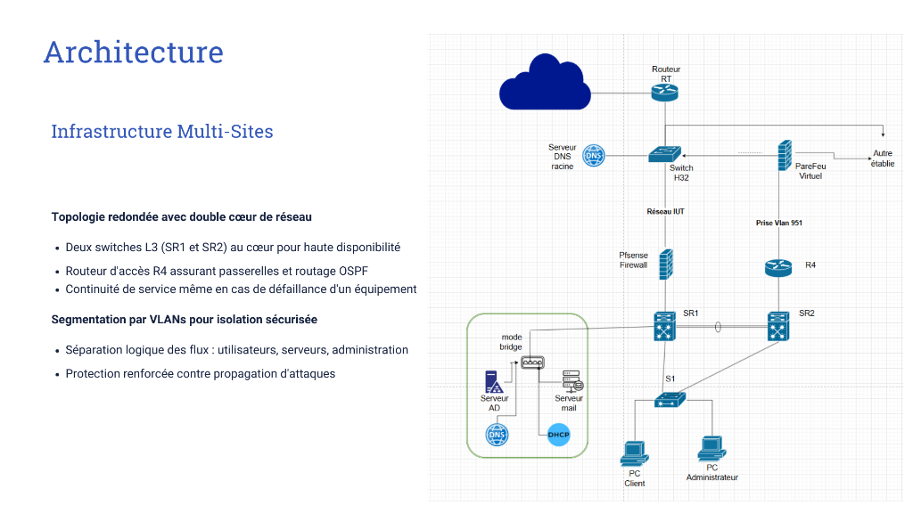
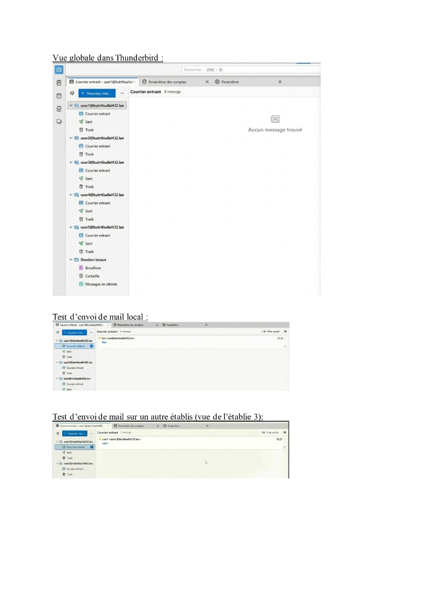
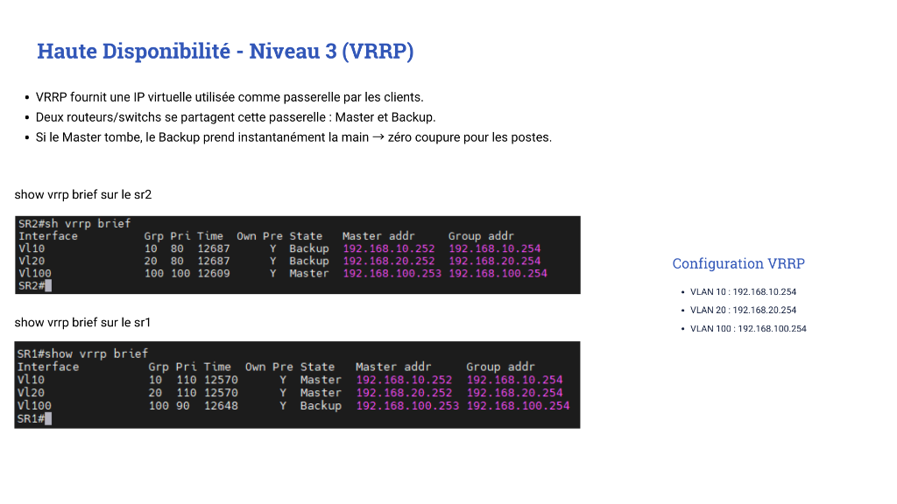

Projet d'Infrastructure Sécurisée
Infrastructure multi-sites redondée
Active Directory, messagerie sécurisée, ACLs, et routage Cisco complet.
CONTEXTE
Conception globale
Ce projet simule la mission d'un ingénieur cybersécurité en entreprise : concevoir
et déployer de zéro une infrastructure réseau de campus compléte, redondée et sécurisée, partir
d'un cahier des charges.
Le scénario : l'Université de Hogwarts (~400 étudiants, 80 enseignants, 40
administratifs) a besoin d'un réseau multi-sites avec messagerie sécurisée, annuaire Active
Directory et haute disponibilité. Chaque décision technique doit étre justifiée du point de vue de
la cybersécurité.
Schémas Infrastructure Multi-sites

OBJECTIFS
Missions principales du projet
- 1 Déployer une infrastructure réseau redondée (STP, OSPF, VRRP) avec VLANs segmentés.
- 2 Configurer un serveur de messagerie sécurisé (Ubuntu + Postfix/Dovecot, certificats TLS auto-signés).
- 3 Mettre en place un annuaire Active Directory DS (Windows Server) avec OUs, groupes, comptes utilisateurs et ordinateurs.
- 4 Implémenter des GPOs et politiques de mots de passe (FGPP) différenciées par profil utilisateur.
- 5 Sécuriser l'accès avec des ACLs sur les switches L3 et un accès SSH sur tous les équipements.
TECHNOLOGIES


Outils & environnements
Cisco Switches L3 (SR1/SR2)
VLANs, routage inter-VLAN, STP, VRRP
Routeurs Cisco (R3/R4)
OSPF, NAT dynamique, route par défaut
VMware ESXi
Hébergement VMs (hyperviseur L1) HP Proliant
Windows Server (AD DS)
Active Directory, DNS, DHCP, GPOs, FGPP
Linux Ubuntu
Serveur de messagerie (SMTP/IMAP sécurisé)
PowerShell
Scripts de création automatique comptes AD
Thunderbird
Client mail (MUA) pour tests messagerie
DéROULEMENT
Ce qui a été déployé concrétement
étape 01
Réseau & Redondance : 3 VLANs segmentés (Data, Server,
Administration). Haute disponibilité L2 (STP avec SR1/SR2 comme root bridges).
Haute disponibilité L3 (VRRP avec bascule auto). OSPF en zone unique pour le routage
dynamique interne, routes par défaut (E1) et NAT vers Internet.
étape 02
Services (DNS, DHCP, Mail) : DNS faisant autorité
(
butrtXsalleH33.lan), serveur DHCP multi-étendues (une par VLAN, hors Server en IP
statique), et serveur mail Ubuntu avec TLS (boétes pour 5 utilisateurs) pour des envois
multi-établissements.
étape 03
Active Directory : Création d'un domaine, DC, OUs
hiérarchiques (AC et RT), groupes de sécurité. Les utilisateurs (49) et ordinateurs (36) ont été créés
automatiquement gréce des scripts PowerShell sur mesure.
étape 04
GPOs & Sécurité (FGPP) : 3 politiques FGPP distinctes :
Admin (12 chars, 15j), Compta (10 chars, 30j), Prof (8 chars, 6 mois). GPOs poussées pour configurer un
fond d'écran, un screen saver avec verrouillage, et déployer 7-zip automatiquement en MSI.
RéSULTATS


Preuves & démonstrations
Cliquer pour voir
Cliquer pour voir

Cliquer pour voir

Cliquer pour voir
COMPéTENCES
Ce que j'ai appris
- Administration réseau avancée : redondance L2/L3 (STP, VRRP), routage OSPF.
- Virtualisation sur hyperviseur de type 1 VMware ESXi.
- Administration Windows Server : Active Directory, GPOs, politiques de sécurité FGPP.
- Déploiement d'un serveur de messagerie Linux sécurisé avec certificats TLS.
- Automatisation via PowerShell pour la création en masse de comptes AD.
- Sécurisation d'une infrastructure : ACLs, SSH, désactivation des ports inutilisés, certificats.